Подборка · данные на 26 ноября
Первое свидание в Москве: где можно спокойно поговорить
На первой встрече важнее всего слышать друг друга и легко находить темы для разговора. Здесь 88 планов и 99 мест, которые мы отметили как подходящие для первого свидания: камерные кафе и винные бары, прогулки по набережным и паркам, небольшие музеи. 54 места из подборки — недорогие, примерно до 1 500 ₽ на человека. Если разговор пойдёт хорошо, в каждом плане рядом есть вторая точка.
- 88 планов
- 99 мест
Планы для первого свидания 24 из 88
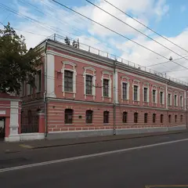
- Галерея «Другое дело» · Галерея в старинной усадьбе · м. Красные Ворота
- 2 минуты пешкомПублика · Ресторан
Сначала выставка в старинной усадьбе, потом через пару минут пешком — ужин с домашней кухней и вечерними коктейлями.
Открыть план: Галерея в усадьбе и ужин рядомПозвать сюда: Галерея в усадьбе и ужин рядом
Фото: Svetlov Artem, CC BY-SA 4.0 · Wikimedia Commons
- Особняк Зинаиды Морозовой · Особняк · м. Баррикадная
- 5 минут пешкомПатриаршие пруды · Пруд и сквер
- 4 минуты пешкомThe Bix · Джаз-бар
В сумерках особняк с башнями выглядит особенно загадочно. Оттуда пять минут до пруда и ещё столько же до джаз-бара, где вечер продолжается под живую музыку.
Открыть план: Готика, пруд и джазПозвать сюда: Готика, пруд и джаз
Фото: Vzorets, CC BY-SA 4.0 · Wikimedia Commons
- Собор Непорочного Зачатия · Собор · м. Улица 1905 года
- 1 минута пешкомКафедра · Кофейня
Зайти в неоготический собор посмотреть витражи, а потом минута до тихой кофейни по соседству. Красивое место и спокойный разговор без дороги.
Открыть план: Готический собор и пирогПозвать сюда: Готический собор и пирог
Фото: A.Savin, Free Art License · Wikimedia Commons
- ГЭС-2 · Дом культуры · м. Кропоткинская
- 1 минута пешкомChima · Фудхолл
Выставки в ГЭС-2, а фудхолл Chima совсем рядом на Болотной — каждый выберет свою кухню.
Открыть план: ГЭС-2 и азиатский ужинПозвать сюда: ГЭС-2 и азиатский ужин
Фото: Юрий Д.К., CC BY 4.0 · Wikimedia Commons
- Особняк Зинаиды Морозовой · Особняк · м. Баррикадная
- 5 минут пешкомПатриаршие пруды · Пруд и сквер
- 2 минуты пешкомI love cake · Кондитерская
Рассмотреть неоготический особняк, за четыре минуты дойти до Патриарших и сделать круг у воды, а потом вернуться на десерт в кондитерскую рядом.
Открыть план: Замок на Спиридоновке и прудПозвать сюда: Замок на Спиридоновке и пруд
Фото: Vzorets, CC BY-SA 4.0 · Wikimedia Commons
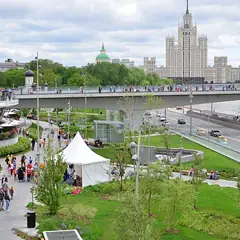
- Парк «Зарядье» · Парк · м. Китай-город
- 10 минут пешкомСофия · Кофейня
Прогулка по парку и парящему мосту, затем десять минут через реку до кофейни с окнами на Кремль. Виды с обоих берегов за одну встречу.
Открыть план: Зарядье и кофе в колокольнеПозвать сюда: Зарядье и кофе в колокольне
Фото: Alina Vozna, CC BY-SA 4.0 · Wikimedia Commons
- Московский зоопарк · Зоопарк · м. Баррикадная
- 11 минут пешкомКафедра · Кофейня
Погулять среди вольеров, пока светло, и за десять минут дойти до кофейни согреться. Простой план без пафоса, где легко найти темы для разговора.
Открыть план: Зоопарк и тёплая кофейняПозвать сюда: Зоопарк и тёплая кофейня
Фото: A.Savin, Free Art License · Wikimedia Commons
- Музей русского импрессионизма · Музей · м. Белорусская
- 10 минут пешкомОдеон · Гастротеатр
Час в музее на «Большевике», затем семь минут пешком до гастротеатра: ужин уже в билете, а спектакль идёт прямо у вашего столика.
Открыть план: Импрессионисты и ужин-мюзиклПозвать сюда: Импрессионисты и ужин-мюзикл
Фото: Sergey A. Demidov, CC BY 4.0 · Wikimedia Commons
- Англиканская церковь Святого Андрея · Концертный зал · м. Александровский сад
- 1 минута пешкомCentrale Bistro · Бистро
Слушаете музыку под неоготическими сводами, а ужинать идёте в бистро через минуту ходьбы. Весь вечер умещается в одном тихом переулке.
Открыть план: Концерт в церкви и бистроПозвать сюда: Концерт в церкви и бистро
Фото: salech hcelas, CC BY 3.0 · Wikimedia Commons
- Смотровая ЦДМ · Смотровая площадка · м. Кузнецкий Мост
- 3 минуты пешкомГранд Кофемания · Ресторан
Встречаете закат на смотровой над центром, спускаетесь и через три минуты садитесь ужинать. Вид даёт тему для разговора, ресторан — время на него.
Открыть план: Крыша ЦДМ и ужин у ЛубянкиПозвать сюда: Крыша ЦДМ и ужин у Лубянки
Фото: A.Savin, CC BY-SA 3.0 · Wikimedia Commons
- Патриарший мост · Пешеходный мост · м. Кропоткинская
- 11 минут пешкомANTIПА · Кафе
С моста открывается панорама реки и центра, а в десяти минутах ходьбы ждёт кафе с тёплой выпечкой, где можно согреться после ветра.
Открыть план: Мост с видом и кофе в переулкеПозвать сюда: Мост с видом и кофе в переулке
Фото: NVO, общественное достояние · Wikimedia Commons
- Государственный музей Пушкина · Музей · м. Кропоткинская
- 6 минут пешкомFinch · Кафе
Сначала залы музея Пушкина в старой усадьбе, потом пять минут переулками до бистро в доходном доме — сэндвичи и десерт, чтобы обсудить увиденное.
Открыть план: Пушкин на Пречистенке и обедПозвать сюда: Пушкин на Пречистенке и обед
Фото: NVO, CC BY-SA 2.5 · Wikimedia Commons
- Пушкинский музей · Музей · м. Кропоткинская
- 1 минута пешкомANTIПА · Кафе
Пара часов среди картин, а потом минута пешком до светлого кафе с выпечкой: впечатления удобно обсудить сразу, пока они свежие.
Открыть план: Пушкинский и кафе за угломПозвать сюда: Пушкинский и кафе за углом
Фото: Ghirlandajo, CC BY-SA 3.0 · Wikimedia Commons
- Дом Бурганова · Музей скульптуры · м. Кропоткинская
- 1 минута пешкомFinch · Кафе
Сначала дворик и залы музея скульптуры, потом минута пешком по тому же переулку до кафе — сырники и сэндвичи, пока обсуждаете увиденное.
Открыть план: Скульптуры Бурганова и поздний завтракПозвать сюда: Скульптуры Бурганова и поздний завтрак
Фото: Apr1, CC BY-SA 4.0 · Wikimedia Commons
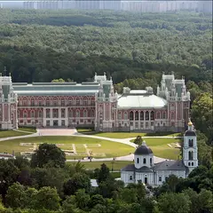
Прогулка по дворцовому ансамблю и парку, а потом кофе с десертом в старинной галерее с видом на Верхний пруд.
Открыть план: Царицыно и кофе у прудаПозвать сюда: Царицыно и кофе у пруда
Фото: Marina Lystseva, CC BY-SA 3.0 · Wikimedia Commons
- Чистые пруды · Бульвар и пруд · м. Чистые пруды
- 5 минут пешкомОстров Пасхи · Кафе
Круг по бульвару у пруда и пять минут до необычного кафе с подземным залом. После прогулки на холоде приятно сесть в тепле и разговориться.
Открыть план: Чистые пруды и кофе в катакомбахПозвать сюда: Чистые пруды и кофе в катакомбах
Фото: SergeyStepykin, CC BY-SA 3.0 · Wikimedia Commons
- Гоголевский бульвар · Бульвар · м. Кропоткинская
- 4 минуты пешкомНитка · Русская чайная
Гоголевский бульвар под жёлтыми липами и долгий чай в отдельной комнате «Нитки».
Открыть план: Бульвар и самоварПозвать сюда: Бульвар и самовар
Фото: Alina Vozna, CC BY-SA 4.0 · Wikimedia Commons
- Чистые пруды · Бульвар и пруд · м. Чистые пруды
- 12 минут пешкомKeep · Гастробар
Круг по Чистым прудам в сумерках, потом свечи и росписи с ангелами в готическом гастробаре Keep во дворах Мясницкой.
Открыть план: Бульвары и готический ужинПозвать сюда: Бульвары и готический ужин
Фото: SergeyStepykin, CC BY-SA 3.0 · Wikimedia Commons
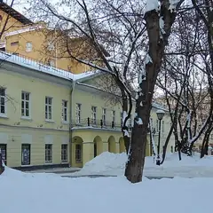
- Дом Гоголя · Музей · м. Арбатская
- 4 минуты пешкомХудожественный · Кинотеатр
Дом, где Гоголь сжёг второй том «Мёртвых душ», и вечерний сеанс в старейшем кинотеатре Москвы.
Открыть план: Вий, Гоголь и киноПозвать сюда: Вий, Гоголь и кино
Фото: Shakko, CC BY-SA 4.0 · Wikimedia Commons
- Патриаршие пруды · Пруд и сквер · м. Маяковская
- 3 минуты пешкомGrand Cru · Ресторан высокой кухни
Прогулка по Патрикам и ужин в Grand Cru с одной из лучших винных карт Москвы.
Открыть план: Вино Grand CruПозвать сюда: Вино Grand Cru
Фото: Dimа, CC BY-SA 3.0 · Wikimedia Commons
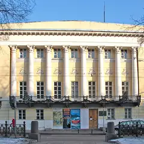
- Музей Востока · Музей · м. Арбатская
- 1 минута пешкомAVA Bistro · Средиземноморское бистро
Искусство Китая и Японии в Музее Востока, потом обед в AVA Bistro через дорогу.
Открыть план: Восток и средиземноморьеПозвать сюда: Восток и средиземноморье
Фото: Panther, CC BY-SA 3.0 · Wikimedia Commons
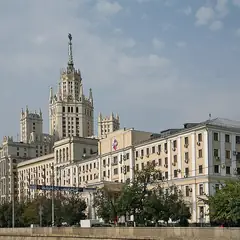
- Высотка на Котельнической · Архитектура · м. Таганская
- 5 минут пешкомИллюзион · Кинотеатр
- 1 минута пешкомЛолита · Ресторан
Сталинская высотка у Яузы, классика в «Иллюзионе» и ужин в «Лолите».
Открыть план: Высотка и старое киноПозвать сюда: Высотка и старое кино
Фото: W. Bulach, CC BY-SA 4.0 · Wikimedia Commons
- Музей «Гараж» · Музей современного искусства · м. Парк культуры
- 25 минут пешкомНескучный сад · Парк
Современное искусство, а потом долгая прогулка вдоль реки в самую тихую часть Парка Горького.
Открыть план: Гараж и Нескучный садПозвать сюда: Гараж и Нескучный сад
Фото: Garage Museum of Contemporary Art, CC BY-SA 4.0 · Wikimedia Commons
- Novikov Space · Творческая студия · м. Полянка
- 10 минут пешкомМузеон · Парк
Вместе лепите посуду на память, а потом гуляете по набережной.
Открыть план: Гончарка на двоихПозвать сюда: Гончарка на двоих
Фото: sailko, CC BY-SA 3.0 · Wikimedia Commons


Места для первой встречи 24 из 99
Гоголевский бул.
Тенистый бульвар от Арбатской площади к Храму Христа Спасителя.
Подробнее и маршрут: Гоголевский бульварПозвать сюда: Гоголевский бульвар
Фото: Alina Vozna, CC BY-SA 4.0 · Wikimedia Commons
Большой Патриарший пер.
Пруд из «Мастера и Маргариты»: скамейки, кафе вокруг, зимой — каток.
Подробнее и маршрут: Патриаршие прудыПозвать сюда: Патриаршие пруды
Фото: Dimа, CC BY-SA 3.0 · Wikimedia Commons
Патриарший мост
Пешеходный мост от Храма Христа Спасителя к «Красному Октябрю» с открыточным видом на Кремль.
Подробнее и маршрут: Патриарший мостПозвать сюда: Патриарший мост
Фото: NVO, общественное достояние · Wikimedia Commons
Чистопрудный бул.
Бульвар с прудом: летом лодки и лебеди, зимой каток. Рядом Меншикова башня.
Подробнее и маршрут: Чистые прудыПозвать сюда: Чистые пруды
Фото: SergeyStepykin, CC BY-SA 3.0 · Wikimedia Commons
Ботаническая ул., 4
Японский сад в Ботаническом: пагода, водопады и сакура весной. Вход платный.
Подробнее и маршрут: Японский садПозвать сюда: Японский сад
Фото: Carbonkidka, CC BY-SA 4.0 · Wikimedia Commons
Большой Афанасьевский пер., 14
Новое
Кафе при «Доме предпринимателей» у Кропоткинской: завтраки в любое время, сырники, каши, сэндвичи и витрина с выпечкой и печеньем.
Подробнее и маршрут: FinchПозвать сюда: Finch
Фото здания: Александр Сигачёв, CC BY-SA 4.0 · Wikimedia Commons
Александровский сад
Сад вдоль Кремлёвской стены: Вечный огонь, Итальянский грот и смена почётного караула.
Подробнее и маршрут: Александровский садПозвать сюда: Александровский сад
Фото: Надежда Пивоварова, CC BY-SA 3.0 · Wikimedia Commons
Вознесенский пер., 8/5, стр. 3
Новое
Неоготическая церковь в переулке у Тверской, где регулярно идут концерты. Рядом сквер с ротондой и фонтаном — удобно совместить с прогулкой.
Подробнее и маршрут: Англиканская церковь Святого АндреяПозвать сюда: Англиканская церковь Святого Андрея
Фото: salech hcelas, CC BY 3.0 · Wikimedia Commons
ул. Косыгина, смотровая площадка
Лесистый склон над Москвой-рекой. У главного здания МГУ — смотровая с видом на Лужники и Сити.
Подробнее и маршрут: Воробьёвы горыПозвать сюда: Воробьёвы горы
Фото: Niklitov, CC BY-SA 4.0 · Wikimedia Commons
Старая Басманная ул., 15А, стр. 4
Антикварная галерея в особняке XVIII века на Басманной: джаз у винтажного рояля, кабаре и вечера по мотивам фильмов Дэвида Линча.
Подробнее и маршрут: Галерея «Другое дело»Позвать сюда: Галерея «Другое дело»
Фото: Svetlov Artem, CC BY-SA 4.0 · Wikimedia Commons
Болотная наб., 15
Бывшая электростанция напротив Кремля: выставки, кино и бар у входа. Вход бесплатный по регистрации на сайте, 11:00–22:00.
Подробнее и маршрут: ГЭС-2Позвать сюда: ГЭС-2
Фото: Юрий Д.К., CC BY 4.0 · Wikimedia Commons
Ленинградский пр., 15, стр. 11
Частный музей в бывшей кондитерской фабрике «Большевик»: Коровин, Серов, Кустодиев и сильные временные выставки.
Подробнее и маршрут: Музей русского импрессионизмаПозвать сюда: Музей русского импрессионизма
Фото: Sergey A. Demidov, CC BY 4.0 · Wikimedia Commons
Крымский Вал, 2
Парк скульптур и прогулка по набережной Москвы-реки.
Подробнее и маршрут: МузеонПозвать сюда: Музеон
Фото: sailko, CC BY-SA 3.0 · Wikimedia Commons
ул. Варварка, 6
Парящий мост над Москвой-рекой и вид на Кремль. Сам парк открыт круглосуточно.
Подробнее и маршрут: Парк «Зарядье»Позвать сюда: Парк «Зарядье»
Фото: Alina Vozna, CC BY-SA 4.0 · Wikimedia Commons
ул. Крымский Вал, 9
Главный парк города: набережная, Голицынский пруд, летние веранды, а зимой — большой каток.
Подробнее и маршрут: Парк ГорькогоПозвать сюда: Парк Горького
Фото: A.Savin, Free Art License · Wikimedia Commons
ул. Малая Грузинская, 27/13
Неоготический собор на Малой Грузинской; по вечерам здесь органные концерты.
Подробнее и маршрут: Собор Непорочного ЗачатияПозвать сюда: Собор Непорочного Зачатия
Фото: A.Savin, Free Art License · Wikimedia Commons
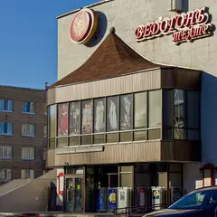
Зеленоград, ул. Юности, 17
Драмтеатр Зеленограда в здании после реставрации: комедии и исторические драмы, сильная труппа, удобные кресла и буфет. Билеты 600–2400 ₽.
Подробнее и маршрут: Ведогонь-театрПозвать сюда: Ведогонь-театр
Фото: Perituss, CC BY-SA 3.0 · Wikimedia Commons
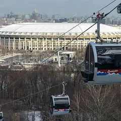
Воробьёвы горы — Лужники
Кабинки над Москвой-рекой от Воробьёвых гор к Лужникам — короткий полёт с видом на город.
Подробнее и маршрут: Канатная дорогаПозвать сюда: Канатная дорога
Фото: Правительство Москвы, CC BY 4.0 · Wikimedia Commons
ул. Вильгельма Пика
Китайский сад с пагодами, мраморными мостиками и прудом с карпами. Вход бесплатный, 8:00–22:00.
Подробнее и маршрут: Китайский парк «Хуамин»Позвать сюда: Китайский парк «Хуамин»
Фото: Soluxe Hotel Moscow, CC BY-SA 4.0 · Wikimedia Commons
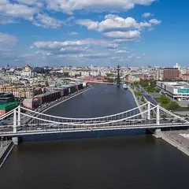
Крымский мост
Висячий мост между Парком Горького и Музеоном — особенно хорош на закате.
Подробнее и маршрут: Крымский мостПозвать сюда: Крымский мост
Фото: A.Savin, Free Art License · Wikimedia Commons
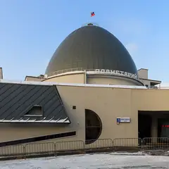
Садовая-Кудринская ул., 5, стр. 1
Звёздный зал под огромным куполом. Работает до 21:00, в выходные до 22:00.
Подробнее и маршрут: Московский планетарийПозвать сюда: Московский планетарий
Фото: A.Savin, Free Art License · Wikimedia Commons
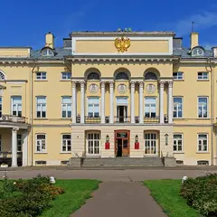
Пушкинская наб. (Парк Горького)
Тихая часть Парка Горького: старые деревья, овраги и набережная без толпы.
Подробнее и маршрут: Нескучный садПозвать сюда: Нескучный сад
Фото: A.Savin, Free Art License · Wikimedia Commons
ул. Волхонка, 12
Античные слепки, итальянский дворик и европейская живопись — классика для неторопливой прогулки.
Подробнее и маршрут: Пушкинский музейПозвать сюда: Пушкинский музей
Фото: Ghirlandajo, CC BY-SA 3.0 · Wikimedia Commons
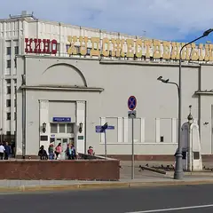
Арбатская пл., 14, стр. 1
Старейший кинотеатр Москвы на Арбатской площади после реставрации.
Подробнее и маршрут: ХудожественныйПозвать сюда: Художественный
Фото: A.Savin, Free Art License · Wikimedia Commons


Как позвать
- Выбери план, место или событие — в карточке адрес, цены и маршрут в Яндекс Картах.
- Нажми «Позвать сюда» — соберётся приглашение-игра для свидания или голосование для компании.
- Отправь ссылку в любой мессенджер: тебе ответят, а компания отметит, куда и когда может. Бесплатно и без регистрации.